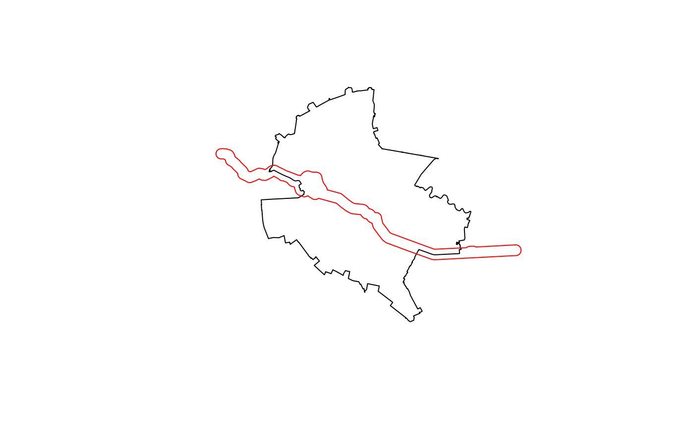

In this notebook we explore how to delineate a river corridor using Bucharest as the study area using OpenStreetMap (OSM) data. We focus on one of the rivers and use a specific projected CRS (coordinate reference system) for the analysis. A project CRS is required for calculating distances along the street network during delineation. Also, we make sure that we include a given area around the city boundaries.
city_name <- "Bucharest, Romania" # Be specific and spell as in OSM
river_name <- "Dâmbovița" # Spell as in OSM
epsg_code <- 32635 # UTM zone 35N
bbox_buffer <- 2000 # Buffer around the city boundary in metersSetting the area of interest
# Get the bounding box from the Nominatim API provided by OSM.
bb <- getbb(city_name)
aoi <- define_aoi(bb, epsg_code, bbox_buffer)
city_boundary <- osmdata_as_sf("place", "city", bb)$osm_multipolygons |>
st_transform(epsg_code) |>
st_geometry()Constructing the initial corridor
river_centerline <- osmdata_as_sf("waterway", "river", bb)$osm_multilines |>
filter(name == river_name) |>
st_transform(epsg_code) |>
st_geometry() |>
st_intersection(st_buffer(aoi, bbox_buffer))
river_surface <- osmdata_as_sf("natural", "water", bb)
river_surface <- river_surface$osm_multipolygons |>
bind_rows(river_surface$osm_polygons) |>
st_transform(epsg_code) |>
st_filter(river_centerline, .predicate = st_intersects) |>
st_geometry() |>
st_union()With these features we can now delineate a theoretical river corridor
representing the maximum area from which the river could be reached
within a walking distance. We construct the initial corridor from the
merged geometries of river_centerline and
river_surface, with a buffer of 500m around them:
corridor_buffer <- 500
corridor_initial <- c(river_centerline, river_surface) |>
st_buffer(corridor_buffer) |>
st_union()We can now plot the initial corridor:
plot(city_boundary)
plot(corridor_initial,
border = "red",
main = "Initial river corridor",
add = TRUE)
Getting the street network
Querying the Overpass API for the highway key:
highway_values <- c("motorway", "primary", "secondary", "tertiary")
streets <- osmdata_as_sf("highway", highway_values, bb)
streets <- merge_streets(streets) |>
select("highway")
#> Warning in st_cast.sf(highways$osm_polygons, "LINESTRING"): repeating
#> attributes for all sub-geometries for which they may not be constantWe split the area of interest in two parts using the river centreline as separator. The two areas can then be used to split the network in two as a preparation to the shortest path algorithm used for edge delineation in the next step:
aoi_split <- aoi |>
split_aoi(river_centerline)
net <- create_network(streets, epsg_code)
net_1 <- net |>
trim_network(aoi_split[1], corridor_initial) |>
clean_network() |>
calc_weights() |>
sfnetworks::activate("nodes") |>
filter(tidygraph::group_components() == 1)
#> Warning: to_spatial_subdivision assumes attributes are constant over geometries
net_2 <- net |>
trim_network(aoi_split[2], corridor_initial) |>
clean_network() |>
calc_weights() |>
sfnetworks::activate("nodes") |>
filter(tidygraph::group_components() == 1)
#> Warning: to_spatial_subdivision assumes attributes are constant over geometriesCorridor edge delineation
Determine the “vertices” of the initial river corridor as the intersections of the initial river corridor with the AoI boundary. We will use these points as extremes for the corridor edges:
vertices_1 <- get_vertices(aoi_split[1], corridor_initial |>
st_cast("LINESTRING"))
vertices_2 <- get_vertices(aoi_split[2], corridor_initial |>
st_cast("LINESTRING"))
corridor_edge_1 <- get_corridor_edge(net_1, aoi_split[1], vertices_1)
corridor_edge_2 <- get_corridor_edge(net_2, aoi_split[2], vertices_2)
corridor_edges <- st_union(corridor_edge_1, corridor_edge_2)Capping the corridor
capped_corridor <- city_boundary |>
lwgeom::st_split(corridor_edges) |>
sf::st_collection_extract("POLYGON") |>
sf::st_as_sf() |>
sf::st_filter(river_centerline, .predicate = sf::st_intersects)
# TODO replace with call to cap_corridor()
corridor <- cap_corridor(corridor_edges, river_centerline, epsg_code, bb)Note that this is not ideal, as the municipal boundaries can be arbitrary and might exclude important end features of the corridors, so the user should have the option to input their own feature to cap the corridor ends. In the case of Bucharest, this can be the ring road.
All in one
The delineate_corridor() function carries out the entire
delineation in one step and returns a list that by default contains the
following output elements: corridor, segments,
and riverspace. Although not included by default, the used
input objects river_line, river_polygon, and
buildings can also be included in the resulting object. The
initial corridor boundary, either a buffer or valley edges derived from
the digital elevation model, can also be included in the output
object.
# TODO this function should run the entire urc delineation process in one step
urc <- delineate_corridor(city_name, river_name,
segments = TRUE, riverspace = TRUE)
# `$corridor` of the resulting object is an sf polygon representing the corridor
urc$corridor
# `$segments` is an sf polygon representing the segments of the corridor,
# TODO make sure the segments are numbered from upstream to downstream
urc$segments
# `$riverspace` is an sf polygon representing the delineated river space
urc$riverspace
# All three elements of delineation
plot(urc$riverspace, col = "green")
plot(urc$river, col = "blue")
plot(urc$segments, col = "lightblue", add = TRUE)
plot(urc$corridor, add = TRUE, col = "red", wt = 2, add = TRUE)